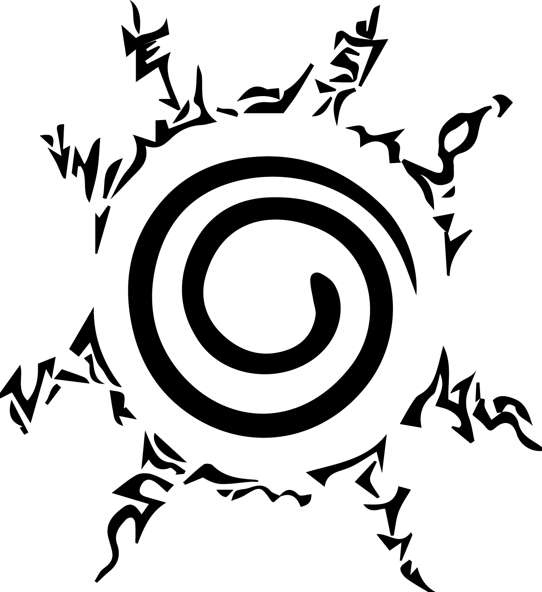

<p class="sticky">
  <mat-toolbar>
   <button mat-icon-button class="example-icon" routerLink="home" aria-label="Example icon-button with menu icon">
    
  </button>
  <span>ANIME~SITE</span>
  <span class="example-spacer"></span>
  <button mat-button *ngIf="check" class="example-icon favorite-icon" routerLink="admin" aria-label="Example icon-button with heart icon">
    Admin Page
  </button>
  <button mat-icon-button class="example-icon favorite-icon" routerLink="favorite" aria-label="Example icon-button with heart icon">
    <mat-icon>favorite</mat-icon>
  </button>
  <button mat-icon-button *ngIf="login" class="example-icon" (click)="logout()" aria-label="Example icon-button with share icon">
   <mat-icon >logout</mat-icon>
 </button>
</mat-toolbar>
</p>
